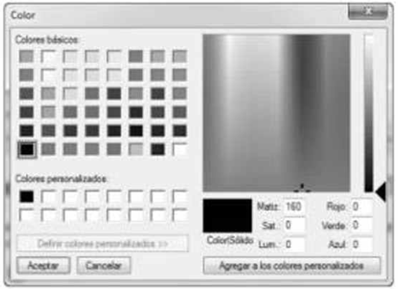
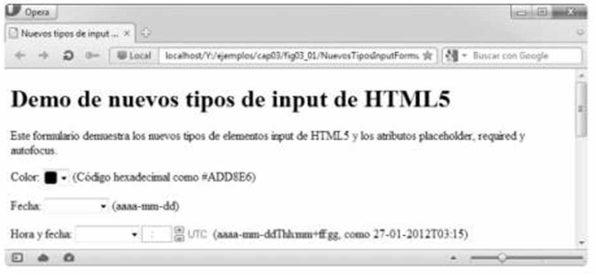
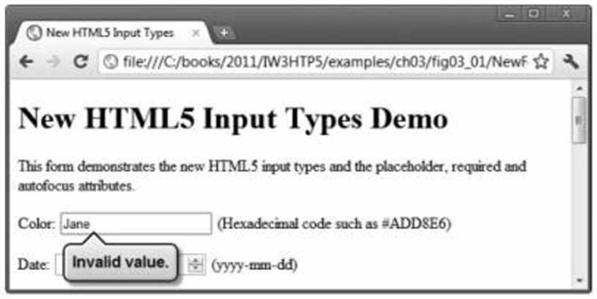

3.2.1 input tipo color
El tipo input color permite al usuario introducir un color. Al momento de escribir este libro, algunos navegadores despliegan el tipo input color como un campo de texto en donde el usuario puede introducir un código hexadecimal o el nombre de un color. Hay dos navegadores, Chrome y Opera, que muestran un selector de color similar al cuadro de diálogo de colores de Microsoft Windows. En el futuro, cuando haga clic en un elemento input color, es muy probable que el resto de los navegadores muestren un selector de color también.

El atributo autofocus
El atributo autofocus (un atributo opcional que puede usarse sólo en un elemento input en un formulario) otorga de manera automática el enfoque al elemento input, lo que permite al usuario empezar a escribir en ese elemento de inmediato. No necesita incluir autofocus en sus formularios.

input color cuando se usa el navegador Opera.Validación
Tradicionalmente ha sido difícil validar la entrada del usuario, como asegurar que se introduzca una dirección de correo electrónico, URL, fecha u hora en el formato adecuado. Los nuevos tipos input de HTML5 cuentan con validación automática del lado del cliente, con lo que se elimina la necesidad de agregar código complicado de JavaScript a nuestras páginas Web para validar la entrada del usuario; así se reduce la cantidad de datos inválidos que se envían y, en consecuencia, disminuye el tráfico de Internet entre el servidor y el cliente que se usa para corregir las entradas inválidas. De todas formas el servidor debe validar toda la entrada del usuario.
Cuando un usuario introduce datos en un formulario y luego lo envía (en este ejemplo, al hacer clic en el botón Enviar), el navegador verifica de inmediato los elementos de validación automática para asegurar que los datos sean correctos. Por ejemplo, si un usuario introduce un valor de color hexadecimal incorrecto al usar un navegador que despliegue los elementos color como un campo de texto (por ejemplo, Internet Explorer), aparecerá una anotación para señalar ese elemento e indicar que se introdujo un valor incorrecto.

input color.Figura 3.5 | Formatos de los tipos input de HTML5.
| Tipo de input | Formato |
|---|---|
color |
Código hexadecimal |
date |
aaaa-mm-dd |
datetime |
aaaa-mm-ddThh:mm |
datetime-local |
aaaa-mm-ddThh:mm |
month |
aaaa-mm |
number |
Cualquier valor numérico |
email |
nombre@dominio.com |
url |
http://www.nombredominio.com |
time |
hh:mm |
week |
aaaa-Wnn |